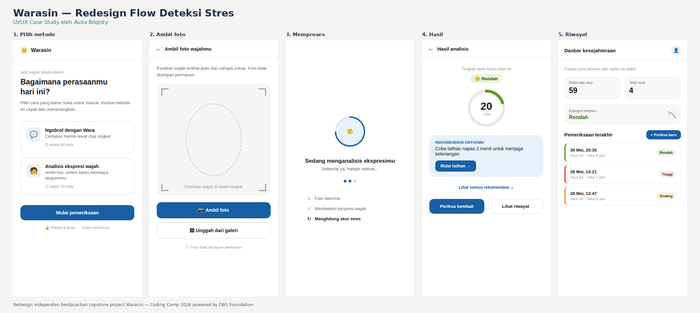

Warasin — Flow deteksi stres
Memperbaiki pengalaman capture foto dan status proses pada platform deteksi stres berbasis AI.
Latar belakang proyek
Warasin adalah platform deteksi stres berbasis chatbot dan analisis wajah, dikembangkan tim capstone bootcamp. Saya berperan sebagai Data Scientist di tim ini — desain berikut adalah eksplorasi UI/UX independen yang dikerjakan di luar peran utama, berdasarkan kelemahan yang dicatat saat evaluasi.

Versi asli hanya mendukung unggah file foto — tidak ada opsi kamera langsung, sehingga kurang praktis dipakai spontan di HP. Tidak ada pula status loading yang jelas saat sistem memproses.
Menjadikan kamera sebagai opsi utama, menambah layar status proses yang sebelumnya tidak ada, dan membuat rekomendasi hasil lebih actionable dengan tombol aksi langsung.
Perbaikan kecil pada titik kritis — seperti momen capture dan menunggu hasil — bisa mengubah persepsi pengguna terhadap keseluruhan produk secara signifikan.
Redesign ini belum melalui user testing langsung. Langkah berikutnya adalah memvalidasi apakah urutan layar baru benar-benar mengurangi kebingungan pengguna saat pertama kali memakai fitur analisis wajah.